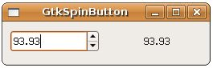

GtkSpinButton是個可以讓使用者輸入數值的元件，具有上下調整的箭頭按鈕，可以設定可輸入數值的上下限、小數位數與按下箭頭的遞增（減）值等，雖然名為Button，但GtkSpinButton實際是衍生自GtkEntry：
GtkWidget
+----GtkEntry
+----GtkSpinButton
+----GtkEntry
+----GtkSpinButton
您可以使用gtk_spin_button_new()函式來新增一個GtkSpinButton：
GtkWidget* gtk_spin_button_new(
GtkAdjustment *adjustment, gdouble climb_rate, guint digits);
GtkAdjustment *adjustment, gdouble climb_rate, guint digits);
climb_rate是設定按下按鈕時，數值改變的加速度，為一個0.0到1.0的設定，digits則是設定顯示數值的小數位數，這個函式還需要一個GtkAdjustment，這個物件用以控制數值的範圍、上下限、遞增（減）值等：
GtkObject* gtk_adjustment_new(gdouble value, // 初始值
gdouble lower, // 下界值
gdouble upper, // 上界值
gdouble step_increment, // 遞增（減）值
gdouble page_increment, // 對GtkSpinButton較無意義
gdouble page_size); // 對GtkSpinButton較無意義
gdouble lower, // 下界值
gdouble upper, // 上界值
gdouble step_increment, // 遞增（減）值
gdouble page_increment, // 對GtkSpinButton較無意義
gdouble page_size); // 對GtkSpinButton較無意義
GtkAdjustment也可以用於其它的Widget，page_increment是按下PageDown、PageUp時的端增（減）量， page_size是元件可以顯示的大小，但就GtkSpinButton而言，僅step_increment的設定有意義。
您也可以使用gtk_spin_button_new_with_range()，直接指定最小值、最大值與遞增（減）值即可，這個函式會自動產生GtkAdjustment：
GtkWidget* gtk_spin_button_new_with_range(gdouble min,
gdouble max,
gdouble step);
gdouble max,
gdouble step);
在 GtkHBox 與 GtkVBox 就曾經使用過GtkSpinButton，當時使用的就是gtk_spin_button_new_with_range()函式來建立GtkSpinButton，在這邊改寫一下那邊的範例，改為自行建立GtkAdjustment並使用gtk_spin_button_new()函式來新增一個GtkSpinButton：
- gtk_spin_button_demo.c
#include <gtk/gtk.h>
void value_changed_callback(GtkSpinButton *spinButton, gpointer data) {
gdouble value = gtk_spin_button_get_value(spinButton);
GString *text = g_string_new("");
g_string_sprintf(text, "%.2f", value);
gtk_label_set_text(GTK_LABEL(data), text->str);
}
int main(int argc, char *argv[]) {
GtkWidget *window;
GtkWidget *spinButton;
GtkObject *adjustment;
GtkWidget *label;
GtkWidget *hbox;
gtk_init(&argc, &argv);
window = gtk_window_new(GTK_WINDOW_TOPLEVEL);
gtk_window_set_title(GTK_WINDOW(window), "GtkSpinButton");
gtk_window_set_default_size(GTK_WINDOW(window), 250, 50);
adjustment = gtk_adjustment_new(0.0, 0.0, 100.0, 0.05, 0.0, 0.0);
spinButton = gtk_spin_button_new(GTK_ADJUSTMENT(adjustment), 0.01, 2);
label = gtk_label_new("0.00");
hbox = gtk_hbox_new(TRUE, 5);
gtk_box_pack_start(GTK_BOX(hbox), spinButton, TRUE, TRUE, 5);
gtk_box_pack_start(GTK_BOX(hbox), label, TRUE, TRUE, 5);
gtk_container_add(GTK_CONTAINER(window), hbox);
g_signal_connect(GTK_OBJECT(spinButton), "value_changed",
G_CALLBACK(value_changed_callback), label);
g_signal_connect(GTK_OBJECT(window), "destroy",
G_CALLBACK(gtk_main_quit), NULL);
gtk_widget_show_all(window);
gtk_main();
return 0;
}一個執行的結果如下所示：
